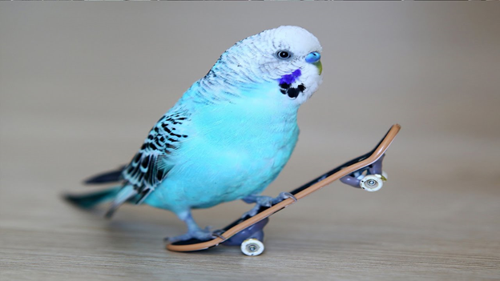
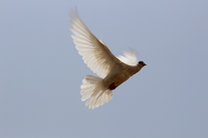
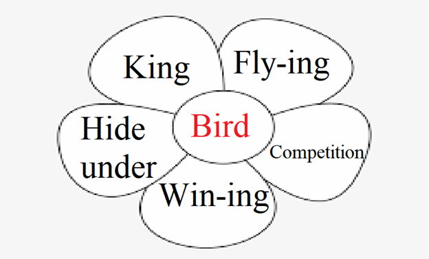

First, I will greet the students. Then I will show them this picture of a bird and tell them that I had a bird as pet once. Then I will ask them whether they have ever had a bird as a pet. I will respond to them wholeheartedly.
Pre-reading Stage

Next, I will tell students that I sometimes fantasize about being the king of my own country.
I will explain as ‘king is the ruler of a country’. I will than ask ‘If you were the king of your country, what would you do?’
I will take their answers and reply sincerely.

Then I will show them this flying bird picture. Then I will tell them that flying is going from place to place without touching the ground. I will tell them that if I could fly, I would fly over the ocean in the night. I will ask them where would they fly to if they could fly and sincerely respond to their answers.
Next, I will show them this picture and tell them that when I was little, I would hide under my blanket when I was scared. I will ask them where they like hiding under when they are scared or playing hide and seek.
Next, I will tell them that one of my favorite ways of solving problems with others is competitions. I will tell them that I especially like puzzle completion races. I will ask students what kind of competitions they like. I will respond to them sincerely.
Next, I will show them this picture and tell them that everybody wants to win. I will tell them that I am confident that I will win in a game of rock paper scissors. I will ask them which games they are confident about that they will win.

Finally, I give them this picture and make use each of them in a sentence, for example: Bird king rules over the birds.